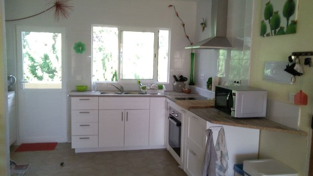
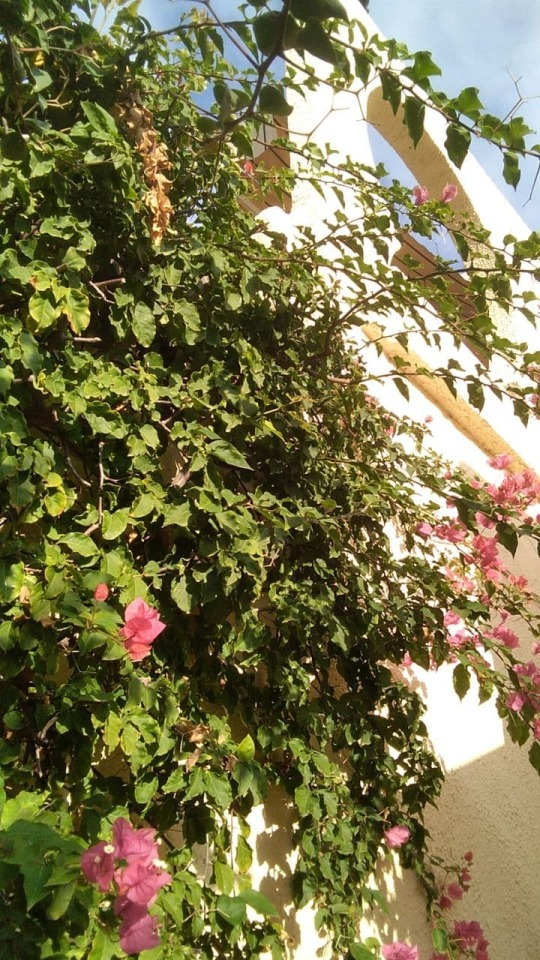
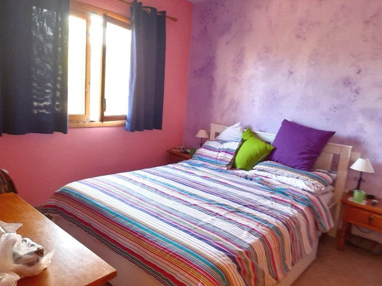
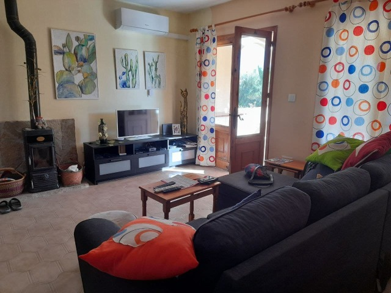
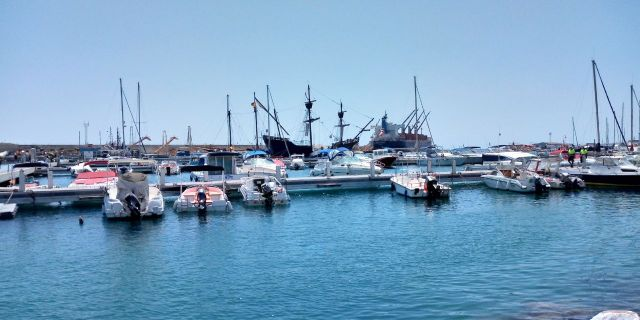
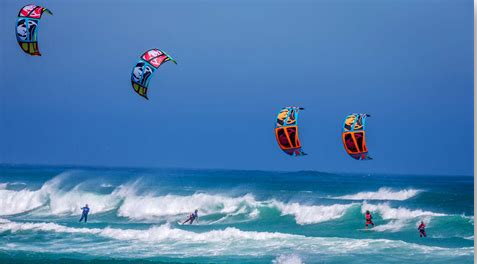
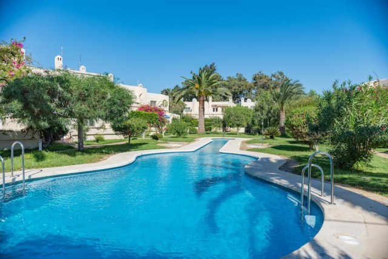
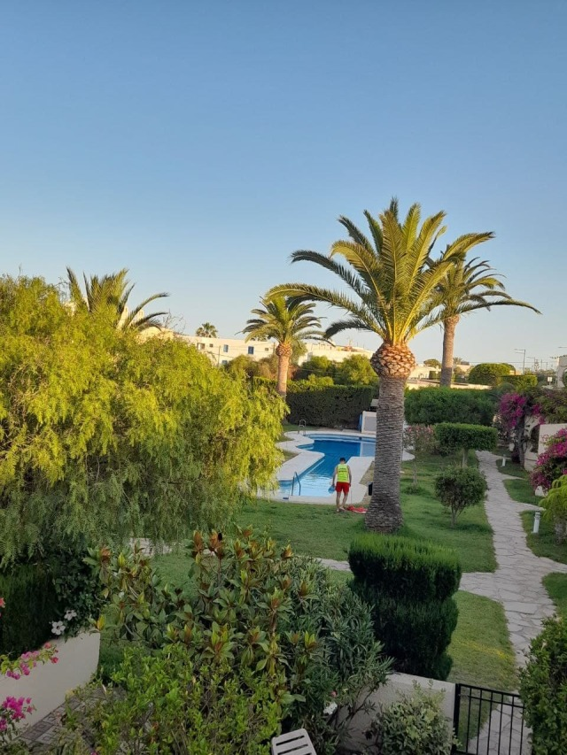
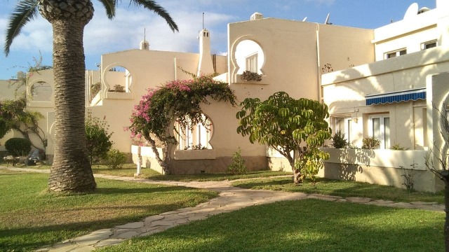

Hola todos
Being a year since we left France I thought I’d update my blog in case you’re wondering wither we wander.
After six wonderful months in Greyton, we returned to Europe on 3rd of June, where Julian met us at Málaga Airport. His boss had given him leave to do so. Except for some waiting the flights back made a pleasant uneventful journey, much in contrast to the outward trip.
Vicki, a now good friend had our bed ready to tumble into.
A good night’s sleep then off to our apartment in Mojacar. Julian and électrician friend, Dominic, continued rewiring. The plumbing was also in process. Julian returned to Madrid where he is props. manager for a Spanish TV series. This meant that we ’d lost our manpower, so had to go it alone with Dominic’ s help. For 3 weeks we to’ed and fro’ed between Tabernas and Mojacar, an hour’s drive, working most days. It was exhausting. At the same time we were sorting out our residencia, involving much beaurocracy, fingerprinting etc and back and forth to Almeria… 1 hour in the opposite direction.
Also furniture.. Ours is in accessible storage but as the apartment will eventually be rented, we wanted new. A bed settee enabled us to sleep ‘on site’ making life a bit easier. Julian filled his two week holiday, demolishing the kitchen lounge wall and installing a super Ikea kitchen which Mike had assembled.. Almost home from home!  I busied myself with the usual emulsion and paintbrush to liven up the walls. One of the walls looked a bit iffy, the paint being of inferior quality to our usual. I decided against yet another coat and do creative sponge printing instead, accompanied by some lively 60’s music. I soon got into the swing of it, making rhythmic thumps on the wall. Then I heard more thumps! Mike must be joining in whilst doing whatever he was doing! The thumps got louder so I started singing along, knowing all the lyrics of that era. Then I heard shouting.. Is he trying to outdo me? Something funny’s going on thought I ! Mike was not at work on the veranda, he was outside.. I went to investigate.. He was throwing stones at the bedroom window.. Locked out! The door slammed behind me.. Both locked out! It was Sunday.. No one around.. Phones indoors.. Car keys indoors.. So went neighbour searching. Elaborate gestures managed to get over the fact that we needed a ladder.. Something not often kept in an apartment. Pablo who lives next door called his sister in law who lives the other next door and she produced a ladder… and a bonus.. She speaks French so could easily communicate without waving and semaphore. Pablo not only brought the ladder to us, but clambered up through the bourgonvilia bush, climbed over our balcony to open the door. A novel way to introduce ourselves.  We’ll soon be known to all our commune. We since then have more than one key and have a installed a coded key box outside. Incidentally the wall looks quite good with its Beatles’ rhythmic prints!
The bed has been délivered so we have a habitable bedroom. Julian, Lorena and dogs can now overnight in the lounge.   The beach is just 50 metres from our door…. A large expanse of soft sand with a few rocks punctuating the shoreline.We can see the Port of Garrucha with its cargo and fishing boat activities.also sailing boat club and rentals are found there.  When the waves are really lively we are entertained by surfing and kite boarding… How do they never get their lines intertwined especially when leaping and somersaulting above the foamy froth.? 
We are at the far end of Mojacar, away from the summer ‘in crowds’, but near enough to visit if we fancy a bit of entertainment and music.
Our community comprises 27 apartments around a guitar shaped pool where you can swim up and down the strings. I myself prefer to swim goldfish style, 5 laps round the head of guitar… A bit of ducking and diving as we cross paths! The pool is surrounded by trees and shrubs. A perfect place for reading, just sunbathing or lazing in the shade.   The apartments are 2 bedroomed on the first floor and 3 bedroomed on the ground floor. We are on the first floor with sea views from back and front.  To be continued